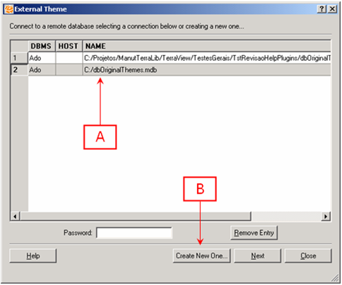

External Theme TerraView
Plugin
User Guide
Author: Karine
Reis Ferreira (karine@dpi.inpe.br)
Date:
12/10/2007
How to create external themes
2. How to create external
themes
Step 1) Connecting to a remote database
When the plugin is opened, connect to
another TerraView database from where external themes will be
obtained. This database is called remote. In the window shown in
Figure 01, there are two options:
a. Select an already existing
connection in the connections list
b. Create a new connection

Figure 01 Window to connect to a TerraView remote database
To select an already existing connection,
click on the desired connection, type in the password (if required),
and click "Next" button.
To create a new connection,
inform connection parameters in the new window, shown in Figure 02,
and click on "Next" button.
Figure 02 – Window to create a new connection
Step 2) Select the external themes
After connecting to a remote database, select the themes from this database to be imported as external themes. In the window shown in Figure 03, the user can visualize the geometries and properties of each theme and mark the themes to import using the box on the left of the theme name.
Figure 03 – Window to select the remote database themes to be imported as external themes
After marking the desired
themes, click on "OK" button to import. Before the import
is started, a list with all themes to be imported will be presented,
as shown in Figure 04.
Figure 04 List of themes to import
After executing the above steps and closing
the plugin, the external themes will be presented in the TerraView
themes tree, as shown in Figure 05. It is important to note that
external themes have an icon different from the conventional themes.
Figure 05 External themes in the TerraView themes tree